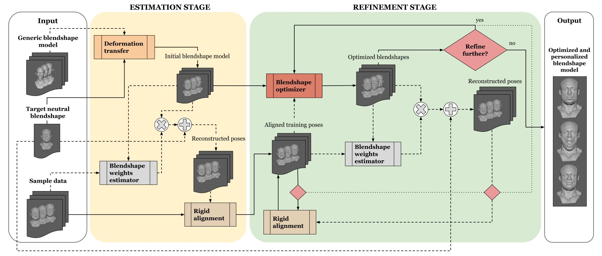
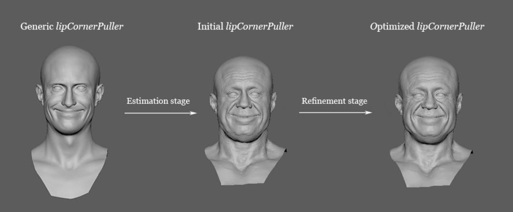
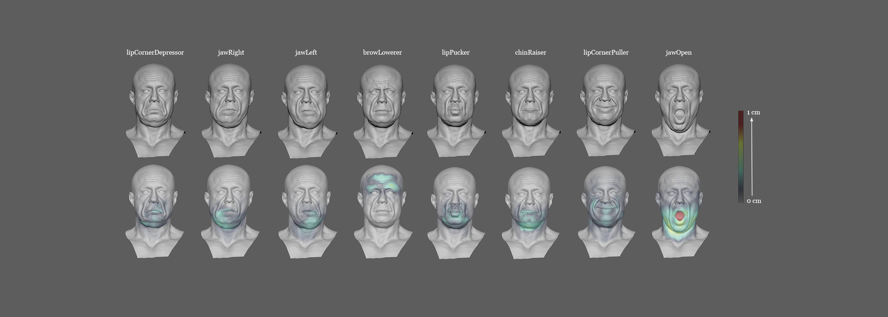
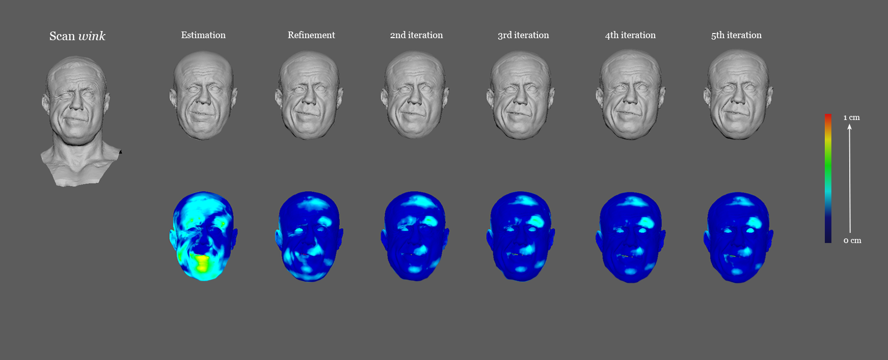

<!doctype html>

<html class="portfolioPage" lang="en">

<head>
    <meta charset="utf-8">

    <title>MSc Thesis</title>
    <meta name="description" content="JosefineKlintberg">
    <meta name="author" content="SitePoint">
    <meta name="viewport" content="width=device-width, initial-scale=1">

    <!-- Styles and fonts -->
    <link rel="stylesheet" href="../style/style.css?v=1.0">
    <link rel="stylesheet" href="https://cdnjs.cloudflare.com/ajax/libs/font-awesome/4.7.0/css/font-awesome.min.css">
    <link href="https://fonts.googleapis.com/css?family=Lora|Open+Sans&display=swap" rel="stylesheet">
    <link href="https://fonts.googleapis.com/css?family=Lora:700&display=swap" rel="stylesheet">

</head>

<body>

    <header>
        <div class="menu" id="topMenu">
            <a href="../index.html">Home</a>
           
            <a href="./projects.html">Projects</a>

            
            <a href="javascript:void(0);" class="icon" onclick="myFunction()">
                <i class="fa fa-bars"></i>
            </a>
        </div>

        <div id="aboutTextPortfolio">
            <h1>MSc thesis project</h1>
            <h2>Individual project - spring 2021</h2>
            <p>Per-actor Based Optimization for Semantic-preserving Facial Rig Generation Using Sample Data</p>
        </div>
    </header>

    <div id="content">
        
        <div class="infoPortfolio">
            <h1>Summary</h1>
            <p class="cursive">This MSc thesis project concluded my studies at Linköping University. I conducted the project 
                at the VFX-company Goodbye Kansas in Stockholm where I was part of the pipeline department as an RnD intern.
            </p>
            <p>With high emphasis on the need of combining recent research and technology regarding automatic facial rig generation with the 
                artistic aspect and the usage of digital humans within film production pipelines, this thesis project presents a scalable 
                blendshape optimization framework that is adapted to fit within a VFX-pipeline, provides stability for various kinds of 
                usage and makes the workflow of creating facial rigs more efficient. 
            </p>
            <p> The framework successfully generates per-actor based 
                facial rigs adapted towards sample data while ensuring that the semantics of the input rig are kept in the process. With 
                the core in a reusable generic model, gradient based deformations, user-driven regularization terms, rigid alignment, 
                and the possibility to split blendshapes in symmetrical halves, the proposed framework provides a stable algorithm that 
                can be applied to any target blendshape. The proposed framework serves as a source for investigating and evaluating parameters 
                and solutions related to automatic facial rig generation and optimization.
            </p>

                <div class="info moreLink">
                    <a href="http://urn.kb.se/resolve?urn=urn:nbn:se:liu:diva-177887">Publication</a>
                </div>

            <h1>Technical Overview</h1>

            <p>The aim of this thesis project was to investigate how to automatically generate a personalized facial rig, with
                the use of a generic and reusable facial rig along with sample data, that is adapted towards target sample data while the semantics
                of the generic rig remains. Subsequently, the thesis project aimed at investigating how such a
                workflow influences the visual result, the correctness and the processing time.</p>

            <p>The automatic framework implemented in this thesis project runs and outputs a facial rig
                consisting of approximately 400 different blendshapes in approximately an hour for a high-resolution facial mesh consisting of over 60,000 vertices when run with 39 base-shapes for
                optimization, and the rest building upon the established hierarchy in a generic facial rig.</p>

            <h2>Core Technologies</h2>
                <ul>
                    <li>Deformation transfer</li>
                    <li>Facial rig representation</li>
                    <li>Optimization towards sample data such as facial scans</li>
                    <li>Shape Matching</li>
                    <li>Symmetrical splitting of blendshapes using masks</li>
                </ul>
            </p>

            <h2>Implementation</h2>

            <p>
                The implementated framework consisted of two stages, one estimation stage and one refinement stage according to the conceptual overview below.
            </p>

            
            <p class="subim">A conceptual overview of the implemented framework.</p>

            <p>The implementation was made in Python with dependencies on Numpy, Scipy, Quadprog and Trimesh (only for i/o cases). Other technologies used was Maya, Matplotlib (for visualizations) and Nix (for packaging the framework).</p>

            <p>The framework successfully generates per-actor based facial rigs adapted towards sample data while ensuring that the semantics of the input rig are kept in the process. With the
                core in a reusable generic model, gradient based deformations, user-driven regularization
                terms, rigid alignment, and the possibility to split blendshapes in symmetrical halves, the
                proposed framework provides a stable algorithm that can be applied for any target blendshape. The framework also served as a source for investigating and evaluating parameters
                and solutions related to automatic blendshape optimization and generation. </p>

            <p>
                Deformation transfer was implemented as a standalone package for further usage within
                the production pipeline. The implementations follows the explanations by Sumner and Popović [1] and Sumner [2] and 
                was limited to cover the case of meshes of the same topology.
            </p>

            <p>
                The overall optimization formulation builds upon EBFR as proposed by Li, Weise and
                Pauly [3] and was extended to a fully automatic framework using findings from Ma et al. [4]
                for blendshape weights estimation and a head motion estimation and alignment in a separate
                step similar to the method by Seol, Ma and Lewis [5]. The optional usage of an iterative update of the refinement stage provides scalability in the solution and offers research prospects
                for investigating the influence of optimization parameters and changing the optimization
                loop for different target blendshapes.
            </p>

            <h2>Results</h2>
            <p>
                Following is a small showcase of the results after applying the automatic framework for a target facial rig. For more images and explanations, I refer 
                to the <a href="http://urn.kb.se/resolve?urn=urn:nbn:se:liu:diva-177887">full thesis report</a>.
            </p>

            <center></center>
            <p class="subim">The result from generic input to optimized expression.
            </p>

            <p>The affected area for a number of expressions in the optimized facial rig compared to the result of pure deformation transfer can be seen in the visualization below.</p>
            

            <p>
                The result of the reproduction of a scanned expression by the framework can be seen below. Here it can be seen that the framework performs well using techniques such as 
                shape matching, splitting of blendshapes in symmetrical halves and stationary constraints. 
            </p>

            
            <p class="subim">The result of the reproduction of a complex scanned expression by the framework.
            </p>


            <h2>Important literature</h2>
            <ul>
                <li>[1] <a href="https://dl.acm.org/doi/10.1145/1015706.1015736">Deformation transfer for triangle meshes</a> - Sumner and Popović
                </li>
                <li>[2] <a href="https://www.semanticscholar.org/paper/Mesh-modification-using-deformation-gradients-Sumner/85d163d8e9337997836cd397258cda7206bd095c">Mesh modification using deformation gradients</a> - Sumner
                <li>[3] <a href="https://dl.acm.org/doi/10.1145/1778765.1778769">Example based facial rigging</a> - Li, Weise and Pauly
                    
                     
                <li>[4] <a href="https://dl.acm.org/doi/abs/10.1145/3005358.3005378">Semantically-aware blendshape rigs from facial performance measurements</a> - Ma et al.
                    
                    
                <li>[5] <a href="https://dl.acm.org/doi/abs/10.1145/2947688.2947693">Creating an actor-specific facial rig from performance capture</a> - Seol, Ma and Lewis
            </ul>

            <h3></h3>
            <p>To learn more about the project, the full thesis can be found at <a href="http://urn.kb.se/resolve?urn=urn:nbn:se:liu:diva-177887">DiVA</a>.</p>

            <p class="return">
                <a href="./portfolio.html">Return to portfolio</a>
                <a href="./projects.html">Return to projects</a>
            </p>

        </div>


    </div>

    <footer>
        <a href="https://www.linkedin.com/in/josefine-klintberg-744b40149/" target="_blank"></a>
        <a href="https://github.com/jklintan" target="_blank"></a>

    </footer>


    <script src="../js/scripts.js"></script>
</body>

</html>